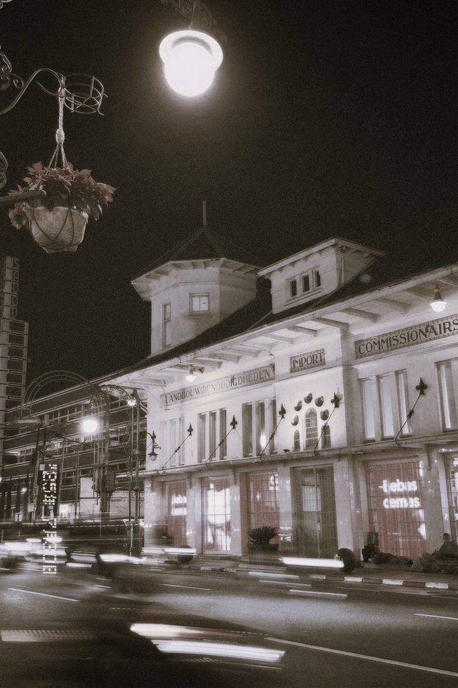
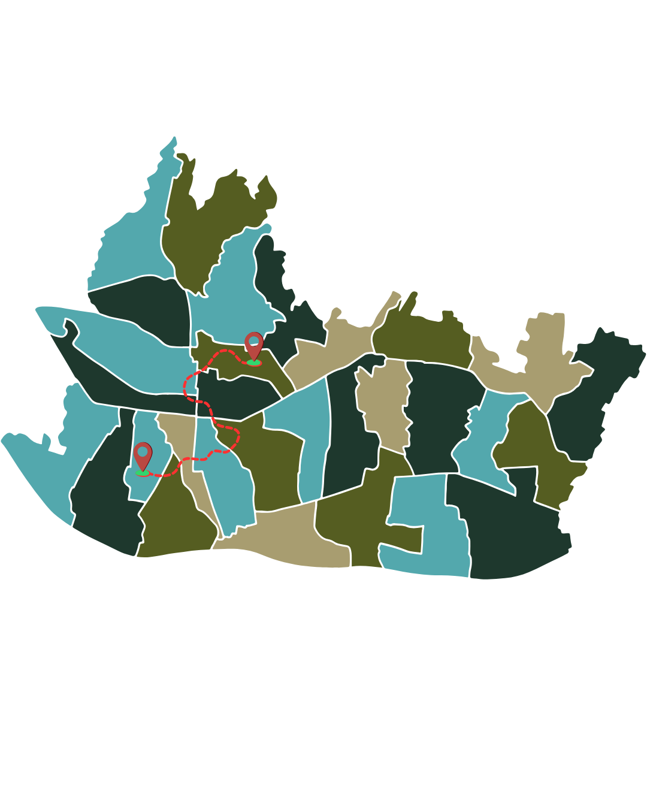
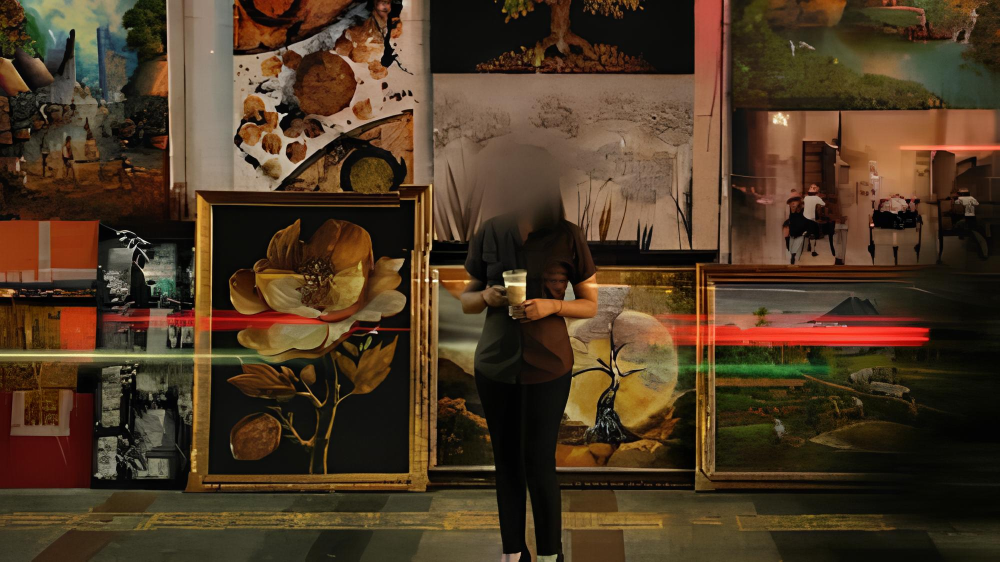
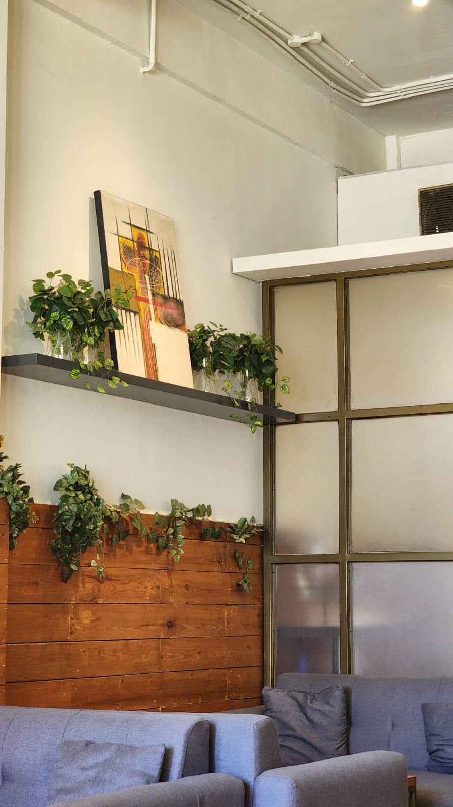
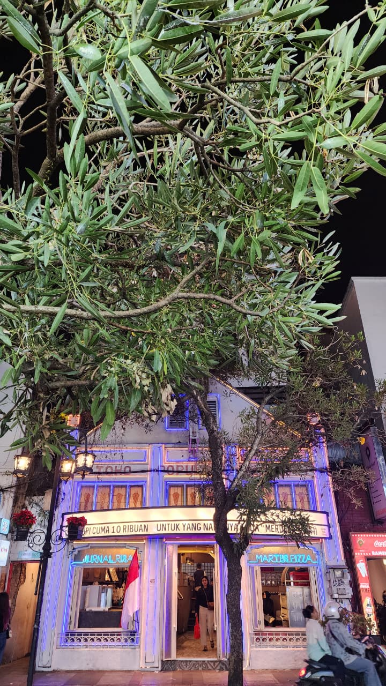
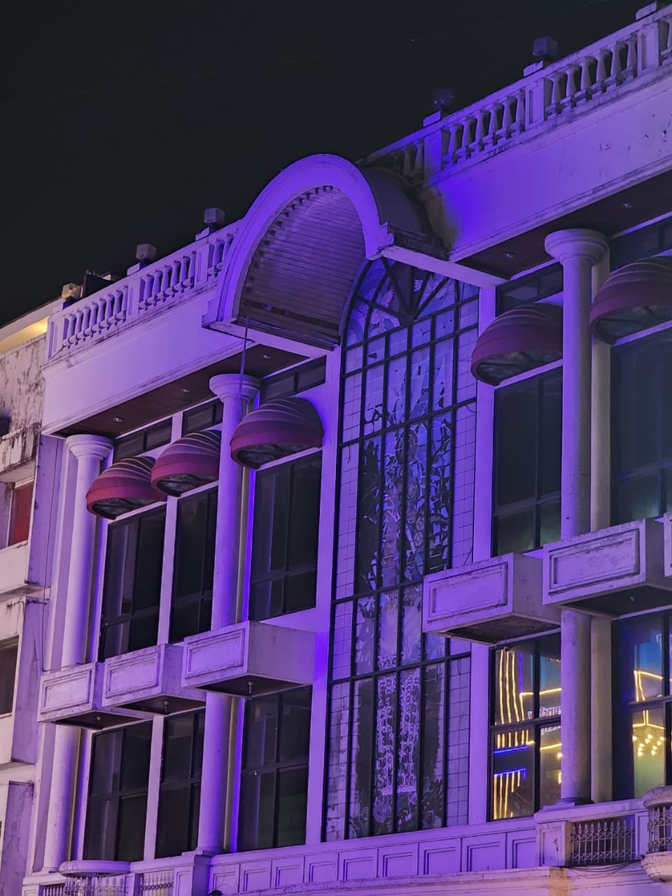
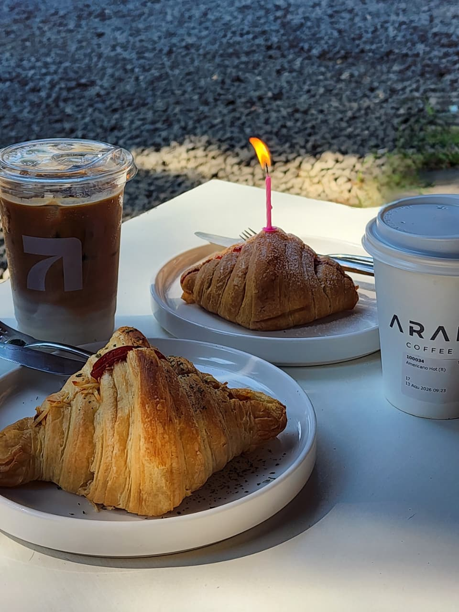
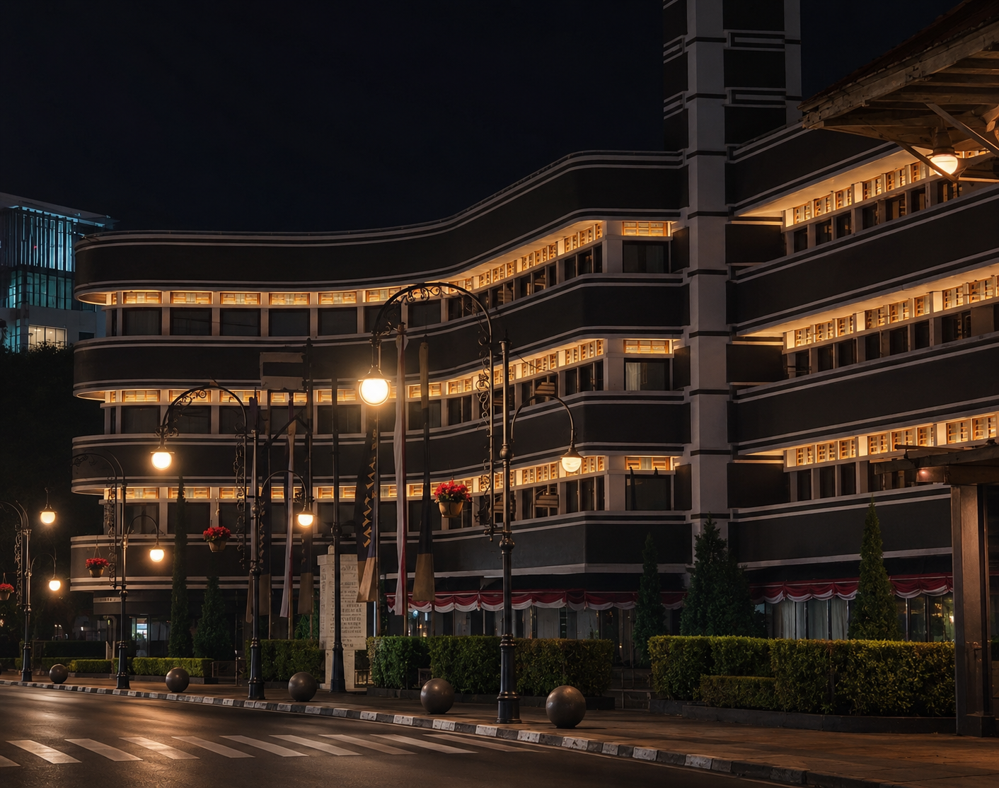

A GUIDE TO BANDUNG
Mark the Moment,
Explore the City,
Be There.
BANDUNG—GO adalah WebGIS interaktif yang dibuat sebagai panduan untuk menjelajahi berbagai tempat di Kota Bandung. Mulai dari cafe, coffe shop, restaurant dan tempat makan lainnya, kemudian hotel, penginapan, hingga destinasi wisata. Setiap tempat dikumpulkan dan ditampilkan berdasarkan lokasinya dalam peta interaktif. Web ini membantu pengguna menemukan tempat baru, melihat pilihan di sekitar suatu area, dan menentukan tujuan berikutnya dengan cara yang lebih visual dan sederhana.

LOCATION
Bandung
West Java,
Indonesia

CAFES / COFFEE / FOOD / STAYS / DESTINATIONS
From quiet cafés and local flavours to creative spaces and hidden destinations, discover the places that make Bandung worth exploring. Find a new favourite, pick your next stop, and see where the city takes you.
BANDUNG / IN FRAME
See the
City.





Bandung bukan hanya tentang tempat yang dikunjungi, tetapi juga tentang momen yang tercipta di dalamnya. Dari menemukan sudut baru hingga berhenti sejenak menikmati suasana, web ini dibuat untuk membantu menjadikan setiap perjalanan di Bandung lebih mudah ditemukan, dinikmati, dan diingat.
INTERACTIVE WEBGIS
Find your
next place.
One map. Five categories. A city waiting to be explored.
LIHAT PETA